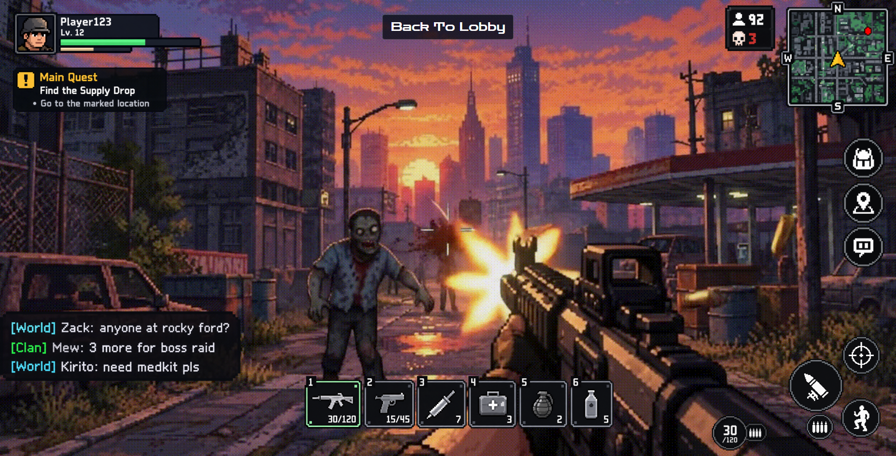

ประสบการณ์จากวิชานี้
CP352201 Web Design Technology · ภาคเรียนที่ 1/2569
สิ่งที่ได้เรียนรู้
ความรู้ด้านเทคนิค
เขียน HTML/CSS เองโดยไม่ใช้ Framework และทำเว็บให้รองรับหน้าจอมือถือด้วย Responsive Web Design
ด้านการออกแบบ
หลัก 8 Golden Rules และ Accessibility เช่น คอนทราสต์ของสี ปุ่มที่กดง่าย และข้อความแทนรูปภาพ
ทักษะอื่น ๆ
การทำงานเป็นทีมในโปรเจกต์กลุ่ม การตรวจโค้ดและแก้ปัญหาด้วยตัวเอง
ประสบการณ์ในรายวิชาที่ชอบ

งานที่ภูมิใจที่สุด: โปรเจกต์กลุ่มเว็บเกม Lost and Found: Apocalypse City ที่ผมรับผิดชอบการออกแบบ Layout 20 หน้า
ปัญหาที่เจอ: มาทำในเวลากระชั้นชิดทำให้พลาดไปในหลายๆจุดที่ควรทำได้ดีกว่านี้
ดูผลงานทั้งหมดข้อเสนอแนะรายวิชา
สิ่งที่ชอบ
- ได้ลงมือเขียนโค้ดเองทุกสัปดาห์
- งานแต่ละชิ้นต่อยอดกันได้
ควรปรับปรุง
- อยากให้อาจารย์สอนโค้ดแบบตัวอาจารย์มาสอนเองเลยไม่ผ่าน TA สอนแก้โค้ดด้วยเช่นยกตัวอย่างโค้ดมาแล้วนั่งแก้โชว์
ข้อเสนอแนะถึงรุ่นน้อง
- ลงมือทำตามทุกแลปค่อยๆทำตาม TA
- เริ่มทำ Assignment แต่เนิ่น ๆ อย่าลืมทำ
ความในใจ
"ก่อนเรียนวิชานี้ผมมองว่าการทำเว็บคือการทำให้หน้าเว็บสวยเท่านั้น แต่ตอนนี้เข้าใจว่าต้องคิดถึงคนใช้งานทุกกลุ่มด้วย ผมอยากนำสิ่งที่ได้เรียนรู้ไปต่อยอดกับการพัฒนาเว็บไซต์และเกมในอนาคต"